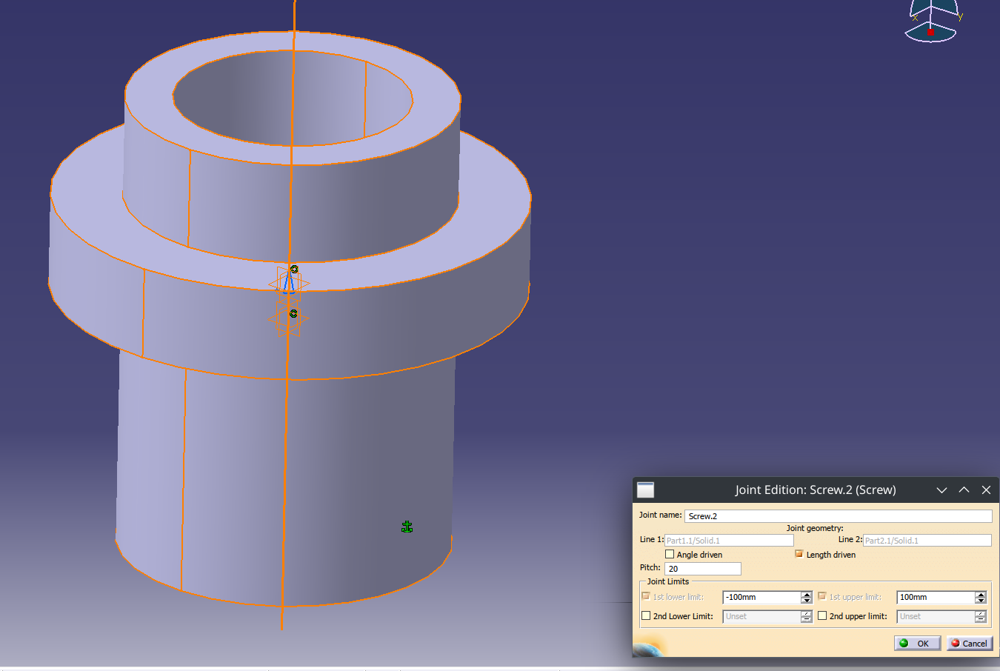
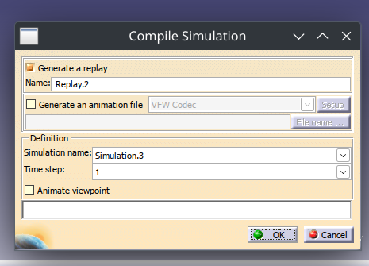
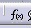
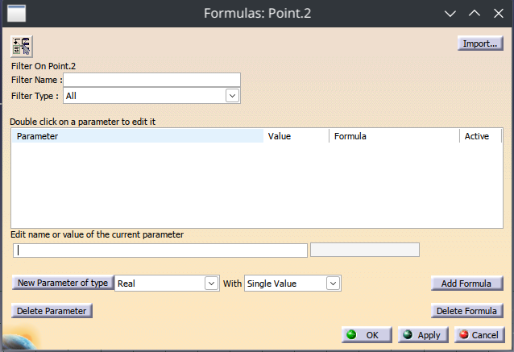
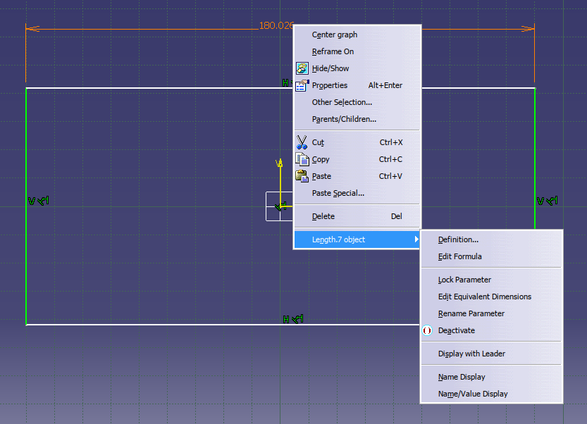
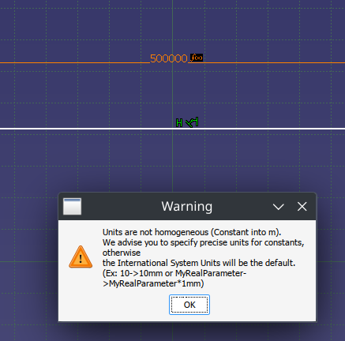
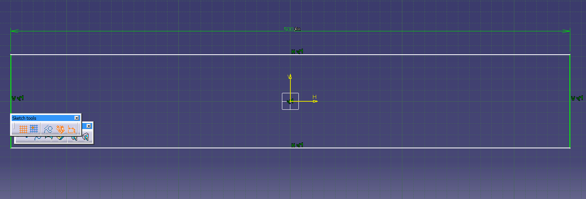
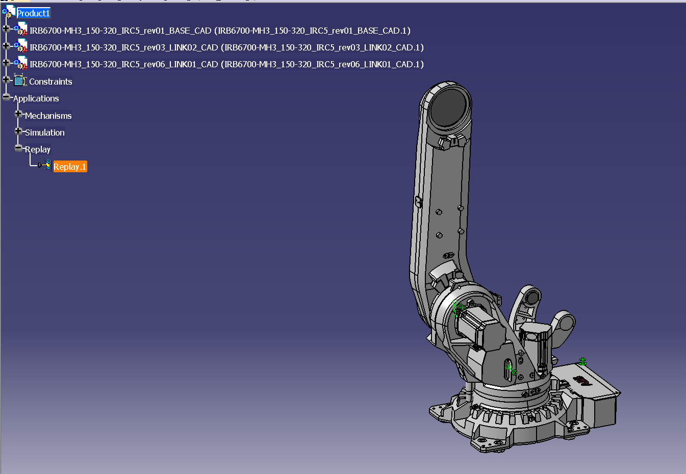

Cylindrical = rotatie + translatie (dar independente)
Screw = rototranslatie
 
Aducem toate piesele in DMU
Definesc cuplele
Commands
Fix parts
Simularea
Compile simulation
Replay (înregistrarea comenzilor)
!!! MECHANISM CAN BE SIMULATED !!! -> fără asta nu se poate simula
Aplicație:
Create joint : IMPORTANT! SE SELECTEAZĂ PART-ul CARE SE MIȘCĂ!

Mechanism -> new mechanism -> selectam daca angle driven sau length driven
Fix part (ancora)
Simulation, automatic insert
Compile simulation

Alegem replay (catia) sau animation file (universal)
Parametrizare!
Apasam F(x)

New parameter of type -> atenție, punem explicit unitatea de măsură (mm) (length!)

Pentru editat cota: BdM, [obiect].object, edit formula (atentie, click pe cota, nu pe linie)

Daca nu ai setat explicit unitatea de masura, urla la tine!

Dupa modificare

Prismatic
Faci un joint nou
Selectezi liniile care tre sa fie an contact
Selectezi planele care sunt an contact
Comanda este in lungime
Fix parts
Profit!
Exemplu folosind robotu'

Pe rand, joint-uri revolute in care selectam axele cilindrelor, iar apoi suprafetele de asezare. Daca este nevoie, putem pune un offset, ca sa simulam jocurile.
Mentiuni: daca e de facut dmu, se cauta roboti care au piesele puse separat, (joint1.step, join2.step) etc, DAR! daca gasim un step cu toate chestiile intr-una, deschidem step-ul, si salvam individual fiecare body din ansamblu.
Pentru constrangeri / elemente de simulare, se pot lua doar din acelasi subansamblu!